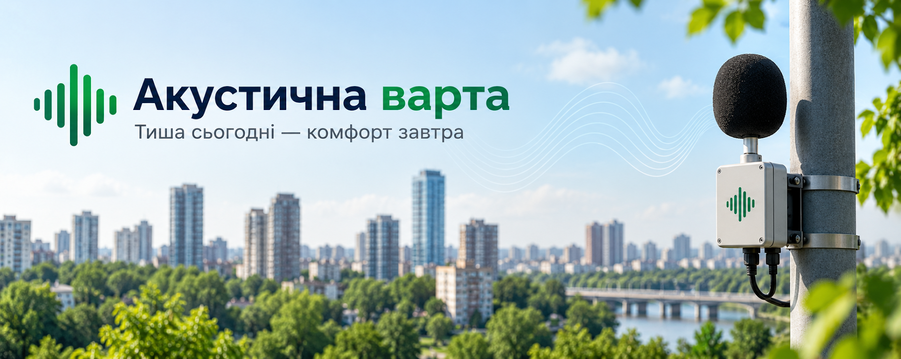

Житлові комплекси
Моніторинг шуму у подвір'ях, дитячих зонах та поблизу транспортних розв'язок Львова.
Тиша сьогодні — комфорт завтра • Львів
Вимірюємо рівень шумового навантаження у Львові. Аналізуємо дані у реальному часі та формуємо карти звукового комфорту для житлових кварталів і бізнесу.
Замовити дослідження
Моніторинг шуму у подвір'ях, дитячих зонах та поблизу транспортних розв'язок Львова.
Оцінка акустичного комфорту open-space просторів та звукоізоляції фасадів на магістралях.
Вимірювання локального технологічного шуму виробничих потужностей та систем вентиляції.
Контроль звукового тиску під час фестивалів, концертів і вуличних подій у межах норми.
Оберіть локацію, щоб відкрити картку технічного звіту.
Заповніть заявку, і дані надійдуть безпосередньо черговому акустичному інженеру.
Поточний еквівалентний рівень: 74 дБ (Норма для дня: 55 дБ)
Джерела навантаження: Вуличні електрогенератори, туристичний потік, розвантаження ресторанів.
Обладнання: Стаціонарний прецизійний шумомір 1-го класу SVAN-971.
Рекомендація: Встановлення звукопоглинальних кожухів для виносного вентиляційного обладнання закладів.
Поточний еквівалентний рівень: 67 дБ (Норма: 60 дБ)
Джерела навантаження: Трамвайний рух, вантажний трафік по бруківці, залізничні маневри Привокзальної.
Обладнання: Всепогодний мікрофонний зонд SV-200.
Статус: Гранично допустимий рівень для змішаного житлово-магістрального сектору.
Поточний еквівалентний рівень: 58 дБ
Джерела навантаження: Лінійний автомобільний рух пр-ту Чорновола.
Обладнання: Сенсор моніторингу типу Brüel & Kjær 2245.
Статус: Показники в межах санітарних вимог завдяки захисній лісопарковій смузі.
Поточний еквівалентний рівень: 41 дБ
Джерела навантаження: Природний фоновий шелест дерев, птахи.
Обладнання: Автономна фонова станція Larson Davis LxT.
Статус: Еталонна рекреаційна зона тиші та спокою.